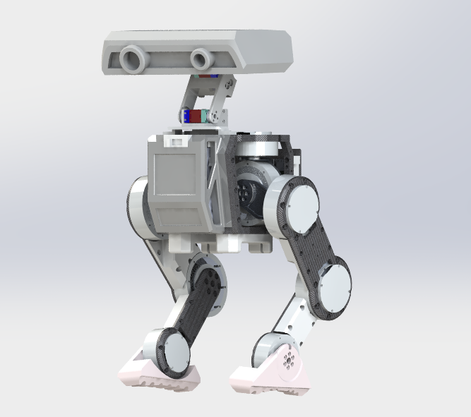

Otto <<
Previous Tinker

(Image source)
Tinker is primarily built using 3D printing and carbon fiber cutting. To ensure structural rigidity, some parts use aluminum alloy cuts. The entire robot runs on 24V power and can be manually assembled. You can process the Tinker kit based on the list below.
UDroid-C4机器人智能控制器 - ¥1499.00 - 1片
MIT驅動無刷伺服電機 達妙科技關節機械臂用雙編碼器 - DM-J6006-2EC - ¥902.00 - 4個
MIT驅動無刷伺服電機 達妙科技關節機械臂用雙編碼器 - DM-J8006-2EC V1.1 - ¥1241.00 - 6個
ZNPM電源模組DC直流5A穩壓降壓迷你低紋波高壓大功率 - ¥37.5
飛特 25kg 單軸機器人機械臂 TTL 總線舵機 - ¥85.0
飛特總線舵機轉換板 USB轉485電路板 伺服馬達控制板 - ¥45
電池 - ¥78.00
4口 Wifi 無線路由器 - ¥89.00
其他 BOM
Otto <<
Previous